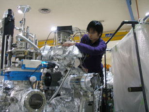

宮原 寛和

| 研究テーマ | 高効率・高分解能スピン分解光電子分光を用いた非磁性体物質表面状態のスピン構造の研究 |
|---|---|
| 出身 | 広島県 |
| 卒業論文題目 | Ag/Bi(111)/Si(111)のスピン分裂バンドの直接観測 |
| 修士論文題目 | 高効率スピン分解光電子分光装置の開発とBiおよびBiカルコゲナイド(111)表面におけるヘリカルスピン構造の研究 |
| 原著論文 | 準備中 |
| 国際学会 |
4. 学会名：The 16th Hiroshima International Symposium on Synchrotron Radiation
題目：Observation of the peculiar Rashba-type spin-split band by high-resolution Spin-ARPES 場所：Hiroshima Univ., Japan (2012.3) ポスター発表 3. 学会名：International Symposium on Surface Science (ISSS-6) 題目：Observation of the peculiar Rashba-type spin-splitting band on Bi(111) surface by high-resolution spin- and angle-resolved photoemission spectroscopy 場所：Tokyo, Japan (2011.12) ポスター発表 2. 学会名：The 15th Hiroshima International Symposium on Synchrotron Radiation 題目：Influence of Ag adsorption on spin electronic states of Bi(111) surface 場所：Hiroshima Univ., Japan (2011.3) ポスター発表 1. 学会名：The 14th Hiroshima International Symposium on Synchrotron Radiation 題目：Study of Ag/Bi(111) spin electronic structure by spin-resolved photoemission spectroscopy 場所：Hiroshima Univ., Japan (2010.3) ポスター発表 |
| 国内学会 |
4. 学会名：第25回 日本放射光学会年会・放射光科学合同シンポジウム
題目：Pb系トポロジカル絶縁体PbBi2Te4の表面ディラックコーンの電子状態 場所：場所：鳥栖市民文化会館・中央公民館 (2012.1) 口頭発表 3. 学会名：第３１回 表面科学 学術講演会 題目：高分解能スピン分解光電子分光によるBi(111)に生じる特異なRashba型スピン分裂バンドの観測 場所：東京、タワーホール船堀 (2011.12) 口頭発表 2. 学会名：日本物理学会 2011年・秋季大会 題目：Pb系トポロジカル絶縁体PbBi2Te4のディラック表面状態の観測 場所：富山大学 (2011.9) 口頭発表 1. 学会名：日本物理学会 2010年・秋季大会 題目：Ag吸着によるBi(111)表面スピン電子状態への影響 場所：大阪府立大学 (2010.9) ポスター発表 |
| 受賞歴 |
1. 賞名：Best Poster Award
International Symposium on Surface Science (ISSS-6) 受賞年月：2011.12 |
| 個人ページ | →Enter |